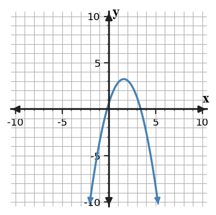

Start with what you can solve independently. Then find different classmates to compare reasoning or help with problems you have not completed. Record your own work and have each partner initial one problem they discussed with you.
Read the graph. Estimate the y-intercept, then use the y-values at two consecutive integer x-values to decide whether the multiplier is greater than 1 or between 0 and 1.

Read the graph. Estimate the horizontal asymptote, then use the y-values at two consecutive integer x-values to decide whether the multiplier is greater than 1 or between 0 and 1.

Compare the graphs of $f(x)=2(2)^x$ and $g(x)=5(2)^x$ using y-intercepts and steepness. Use the graph as evidence.

Analyze $f(x)=8(0.5)^x$ using two methods: a table of values and graph features. Use both methods to explain the domain, range, and long-run behavior.
Factor completely: $2x^2-2x-4$.
Show the two steps for $4x^2-24x+36$: factor out the GCF first, then factor the remaining expression.
Factor completely: $9x^4-4y^2$.
For each expression, decide the most efficient pattern and factor it.
- $25r^2-81$
- $16p^2+40p+25$
- $3x^2-27$
Complete the table and use it to factor the trinomial.
| Expression | First square | Last square | Middle check |
|---|---|---|---|
| $4x^2-20x+25$ | _____ | _____ | _____ |
Use the signs to write the correct squared binomial.
Two students rewrite $x^2-4x-5$.
Student A uses $(x-5)(x+1)$ to answer where the function has zeros. Student B uses $(x-2)^2-9$ to answer the same question.
Compare the two methods and decide which is more direct for this question.
A context asks for the maximum height of a quadratic model. A student chooses factored form because it shows the zeros. Is that a reasonable form choice? Give a reasoned argument and name a more useful form if needed.
A student says $25a^2-20ab+16b^2=(5a-4b)^2$. Revise the expression or the factorization so the statement becomes true, and explain the exact term that caused the mismatch.
State why adding $25$ completes $x^2-10x$.
Convert $x^2-4x+1$ to vertex form.
Solve or interpret the quadratic situation for Completing the Square. Show the algebra that supports your answer.
Rewrite $y=x^2-10x+18$ in vertex form and name the vertex.
Reasonableness/Estimation Argument. Analyze the quadratic evidence for Quadratic Formula. Write a conclusion and justify it with algebraic or graphical evidence.
A model gives solutions $t=-0.2$ and $t=3.4$ seconds. Decide which solution(s) are meaningful and justify using the context and the equation form.
